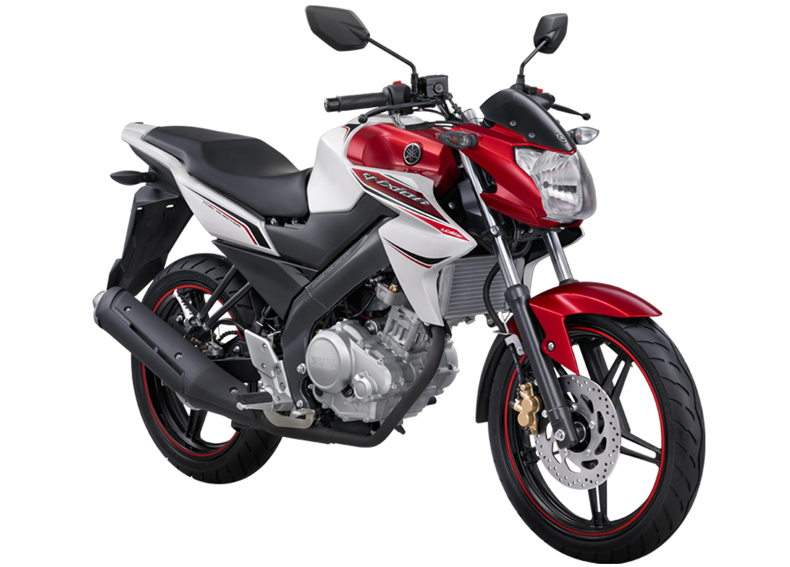

Tentangku.com
Kegiatanku
• Hobi
 />
Hobi hobi saya adalah berenng, karena selain bisa menyehatkan badan juga dapat menghilangkan stress karena kelelahan dan kurang nya berolahraga, pertama kali memang sedikit sulit menyesuaikan diri hingga 2 tahun di smp saya diajari berenang oleh guru olahraga saya yaitu bu ratna hingga saya bisa berenang dengan lancar
Selain itu, hobi saya yaitu bersepeda motor ataupun bersepeda kayuh biasa, alasan saya memilih hobi tersebut karena saya sangat suka mencari tempat tempat yang nyaman untuk saya, seperti taman taman kota ataupun fasilitas umum seperti gedung gedung di surabaya, mengapa? karena sangat bangga karena dapat melihat semua ini pada zaman ini dan sangat besyukur akan hal itu
• Sekolah

Saya bersekolah di sekolah yang bersih dan indah sekolah
Smk 2 Budurandisana ada guru yang mengajari ilmu komputer, saya berada di
jurusan RPL(Rekayasa Perangkat Lunak)
SMK Negeri 2 Buduran berasal dari Sekolah Menengah Ekonomi Atas yang
sebelumnya merupakan peningkatan sekolah dari Sekolah Menengah Ekonomi
Pertama di Porong ditingkatkan menjadi Sekolah Menengah Ekonomi Atas
yang diterbitkan melalui Keputusan Menteri Pendidikan dan Kebudayaan
Republik Indonesia atas nama Sekretaris Jenderal T. Umar Ali Nomor :
017/0/1979 tanggal 29 Januari 1979. Bersama itu pula yang menjabat
sebagai Kepala Sekolah Menengah Ekonomi Atas yang pertama dijabat oleh
Bapak Drs. Heru Soejipto.
• Cita-Citaku
Saya bercita-cita menjadi sorang guru juga seorang programmer karena saya ingin menyampaikan ilmu saya kepada generasi pada masa mendatang agar ilmu yang saya pelajari tidak sia sia
• Next 10 year
Pertama saya akan kuliah dengan bekerja sampingan untuk meringankan beban orang tua saya lalu mendaftar sebagai pegawai negri swasta (PNS) dan menjadi guru yang mengajari tentang ilmu komputer di sekolah sekolah dasar, lalu meningkatkan hingga mengajar ke jenjang SMAatau diatasnya.